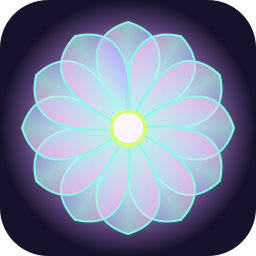

In development · v0.4.0
Kaleidoscope

Take a trip through the Kaleidoscope.
Audio. Visuals. Other worlds.
A collection of original audio and visual experiences. We explore chords, capture a performance, build a composition, and create a moving world around the music.
Enter Kaleidoscope ↗Play the chord labs
Explore our 4×4 instruments, play your own progression and record a take. No account required.
- Sunlit · Bright house · 130 BPM
- Disco Drive · French house · 120 BPM
- Black Coil · Industrial psychedelia · 80 BPM
What’s new · v0.4.0
Our first three songs and music videos now have a dedicated gallery: Orbital Drift, Sunlit and Black Coil. Public playback is being prepared.
01 · Orbital Drift — A Father’s Return
Our first video: an ambient illustrated journey about a father, his child, distance, passing years and reunion.
02 · Sunlit
Bright house at 130 BPM, sparkling arpeggios, pastel glass and neon kaleidoscopic patterns.
The songs and videos are hosted on Google Drive. Visit the gallery. Headphones recommended.
03 · Black Coil — Living Machine
Dark, hypnotic industrial psychedelia at 80 BPM, with a living machine visual experience.
← Back to the collection